B-System アプリケーション体系 (Applications)
すべてのツールが実身（Real Body）を共有し、仮身（Virtual Body）として相互に埋め込み可能な14のネイティブ環境
MediaPulse リアルタイム
- 任意メディアのドラッグ＆ドロップ即時仮想オブジェクト化
- フレーム精度（Frame-Accurate）のシークとタイムライン注釈
- TADハイパーメディア文書へのシームレス直接埋め込み
Workbench 空間デスクトップ
- 実身アイコンとウィンドウのミニチュア仮想オブジェクト化
- 属性ベースのリアルタイム・ライブクエリ（Live Query）
- ファイル階層を超越した空間的オブジェクト管理
Clarity 知識環境
- 和欧混植を極めた美しい組版とリーディングビュー
- 全実身データベースを横断するインデックス瞬時検索
- ゼロ・フリクションなノート＆メディアキャプチャ
Living Book 双方向書籍
- BTRON 4大システム書の完全インタラクティブ化
- 紙面コードのインライン・ライブ実行環境
- ドキュメントに密着して移動するマルチメディア注釈
T-Editor TADエディタ
- TAD標準準拠の真のハイパーメディア編集
- Mozc TIP連携による高度な漢字・多言語文字入力
- 実身と仮身の自由な埋め込み・展開・リンク網形成
Terminal TRON端末
- TRON多言語文字コード＆Unicode完全ネイティブ表示
- 端末出力やセッションの仮想オブジェクト化
- 低遅延VirtIO-Console & POSIXサブシステム連携
Commander 2画面ファイラー
- 熟練研究者のための高速キーボード主導2画面レイアウト
- 実身と仮身の一括整理・相互リンク自動生成
- TADキャビネット構造の階層ツリー＆一覧表示
Browser HTML→TAD変換
- 1クリックでWebページをTAD実身文書へ完全変換
- 無駄なスクリプトを排した超高速レンダリング
- T-Editorでの即座な再編集・注釈追記
Mail & Chat 統合通信
- 標準XMPP / Erlang Pub-Sub基盤による堅牢な暗号化通信
- 対話メッセージの実身・仮身化とドキュメント貼付
- 連絡先ごとのリアルタイムプレゼンス表示
Paint 作図・スケッチ
- TRON Display Primitives（DP）直結のベクター/ラスター作図
- ネイティブTAD図形セグメント出力で解像度無依存
- 直感的なパレット操作とクイック注釈機能
Music 音響制作
- μITRON高精度タイマーに基づくジッターフリー再生
- パターンやサンプル単位での仮想オブジェクト再利用
- MediaPulseとのゼロコピー・オーディオルーター連携
Calculator 高精度電卓
- 任意精度演算と包括的な計算履歴ジャーナル
- 計算結果・数式のドラッグ＆ドロップ仮想オブジェクト化
- 研究用途に最適な単位換算・科学関数ライブラリ
Clock 時刻・タイマー
- 世界各国のタイムゾーン表示とミリ秒タイマー
- TAD文書内へライブ稼働する時計オブジェクトを埋め込み
- システムアラームとμITRONリアルタイムスケジューラ連動
Preferences 環境設定
- ワンクリックで主要システムパラメータへアクセス
- 設定フォルダ（Settings Folder）の10分野を統合管理
- 設定変更の即時反映（OS再起動不要）
Ski Bootloader ブートマネージャ
- グラフィカル／ANSI両対応の対話型OS選択・引数編集
- x86_64 UEFI SMPにおけるACPI MADT APコア自動起動
- Raspberry Pi 1〜5およびNEC PC-98実機ブートドライバ統合
実身・仮身モデルとTADハイパーメディアの神髄
BTRONの最大の発明は、1980年代に坂村健博士が提唱した「実身・仮身（Real Body / Virtual Body）モデル」です。現代のファイルシステム（Unix階層やWindowsフォルダ）が「ファイルへのポインタ」と「ディレクトリの木構造」に拘束されているのに対し、B-Systemではデータの実体（実身）は唯一無二の永続オブジェクトとして格納され、あらゆる文書・ウィンドウ・タイムラインの中に無制限に参照（仮身）として配置できます。
📦 実身（Real Body / 実体）
データの実体そのもの。テキスト本文、録音音声、高解像度動画、実行可能バイナリ、描画ベクターデータなど。実身はシステム全体で一意のオブジェクトIDを持ち、自律的な暗号化・メタデータ・版管理が施されます。
🔗 仮身（Virtual Body / 投影）
文書や画面内に配置された実身への「生きた窓」。仮身をダブルクリックすればその場で開き、編集内容は実身にリアルタイム反映されます。1つの実身を100個の異なるTAD文書へ仮身として埋め込んでもデータは重複しません。
設定フォルダ (Settings Folder)
システムのあらゆる挙動を精密に司る10の独立設定ドメイン
B-System 実行環境ギャラリー
C99 Cleanroom & SDL2 / VirtIO上で稼働する実機スクリーンショット
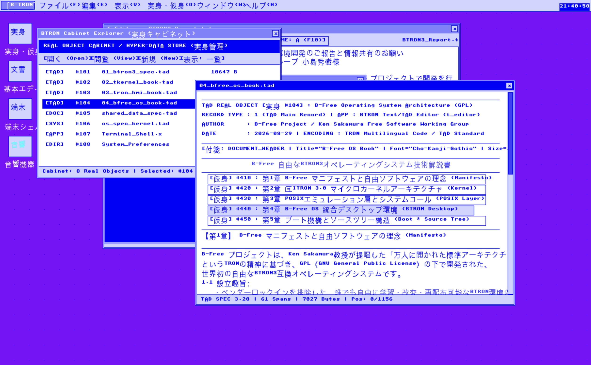
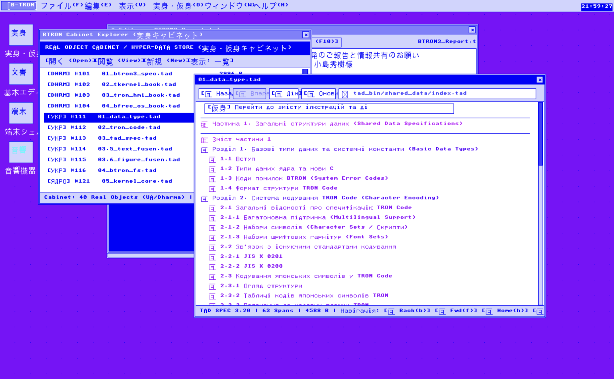
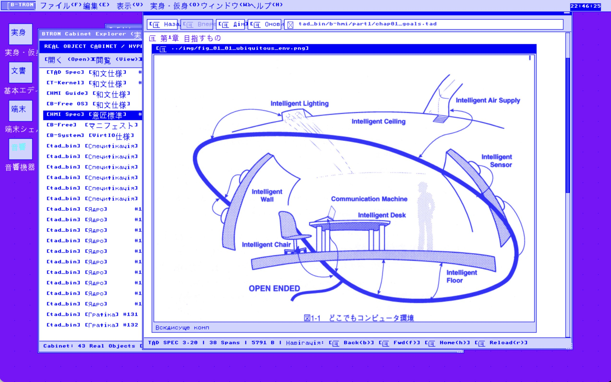
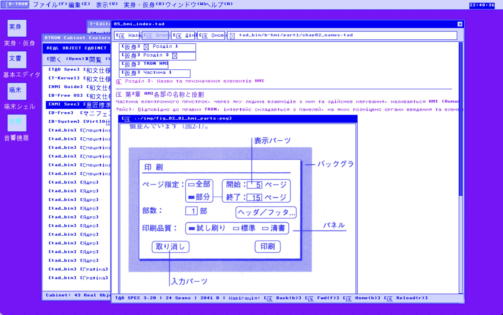
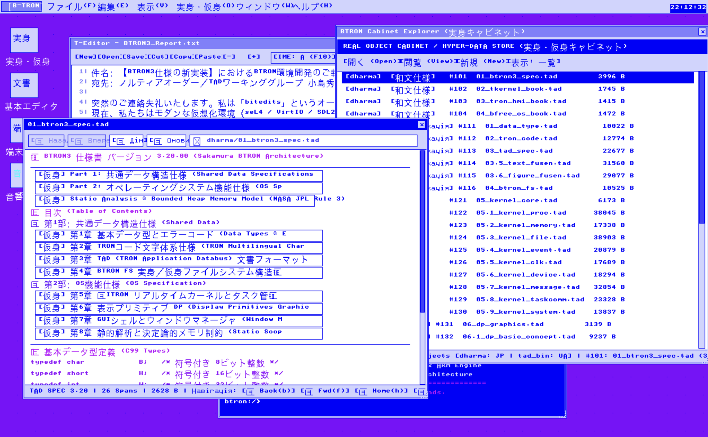
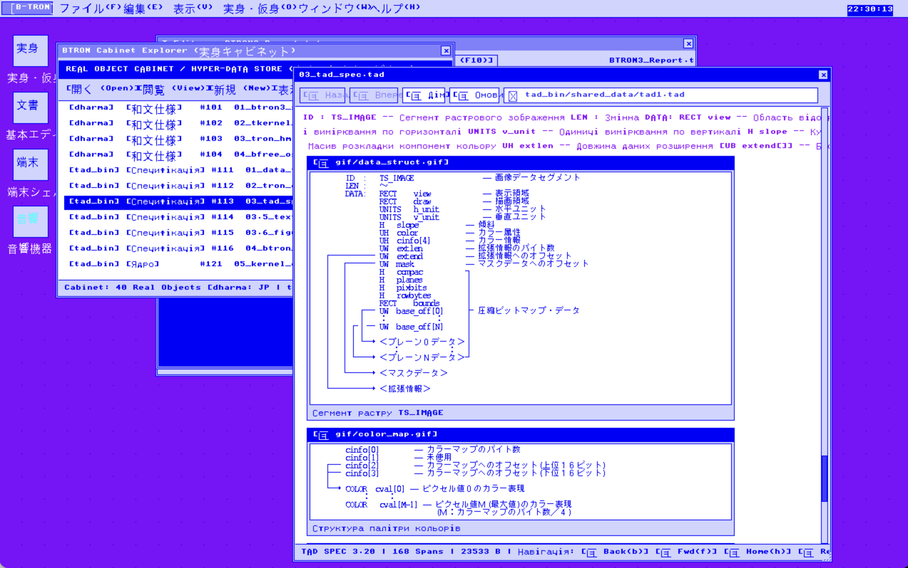
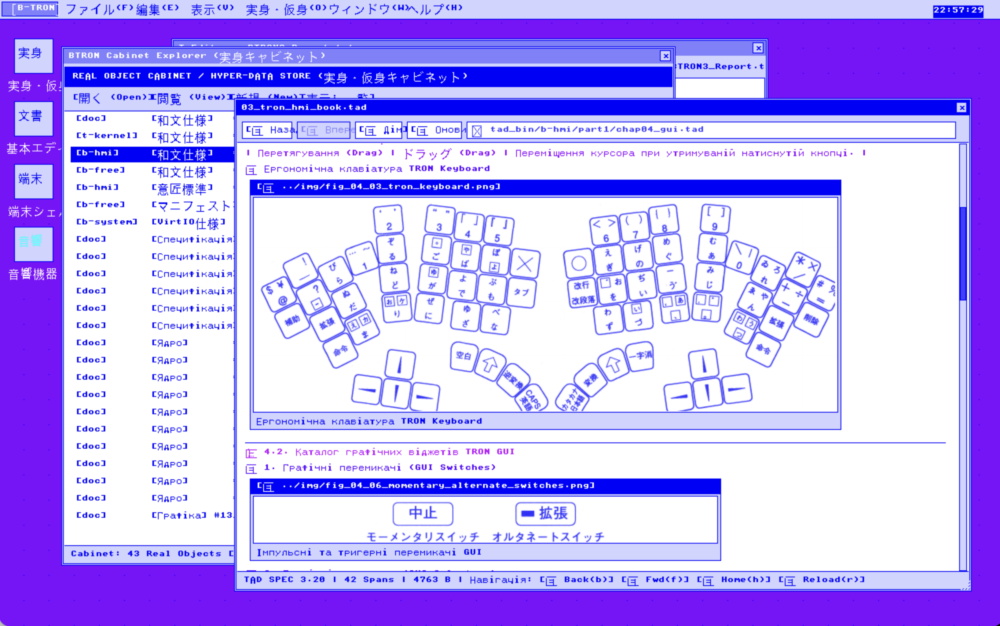
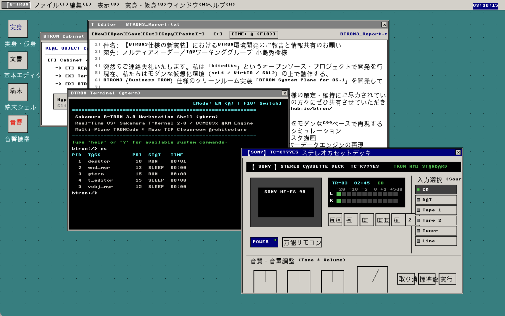
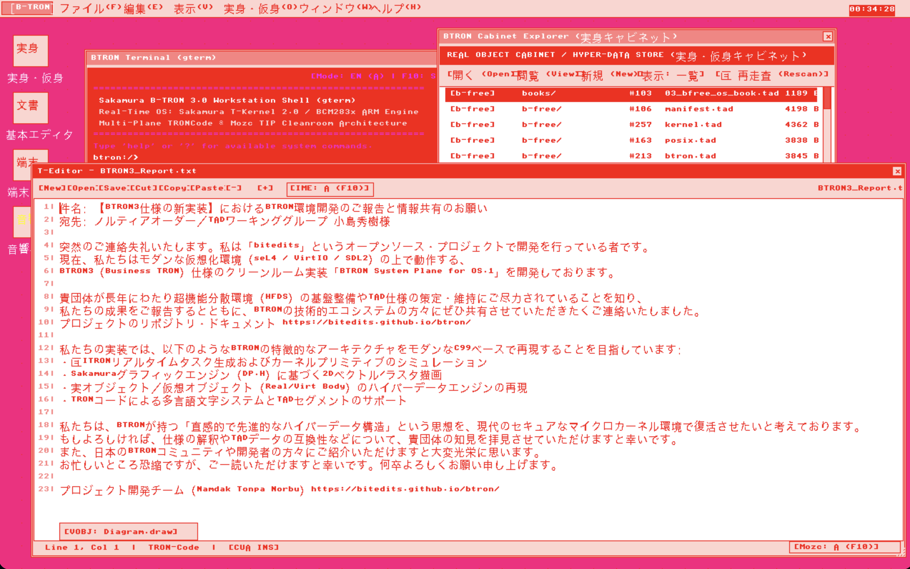
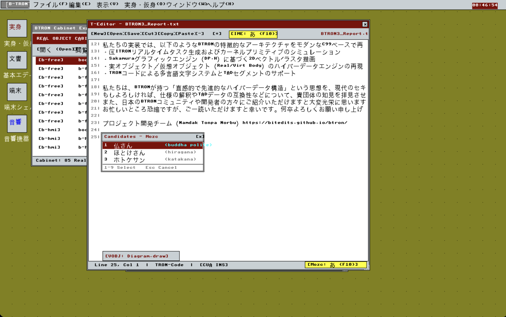
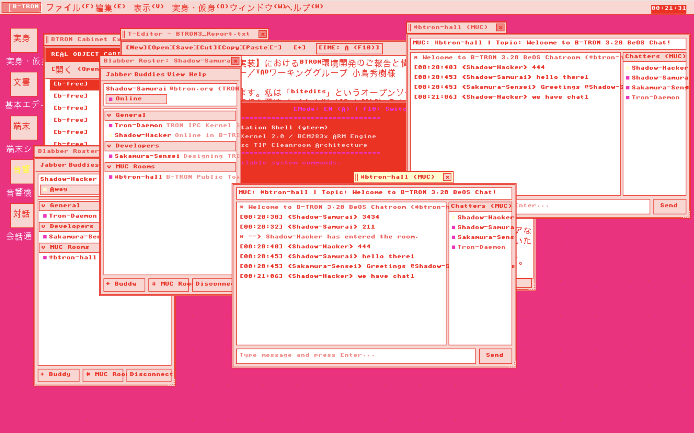
研究者・技術者向け技術総括
Formal Foundations & Modern Virtualization Implementation (2026)
B-Systemは、歴史的なBTRON3仕様（μITRON 3.0 / DP / WND / VOBJ / TAD）を完全に網羅しつつ、1980〜1990年代のレガシーなハードウェア依存（FDC、16ビットセグメンテーション、ISAバス等）を完全に排除しています。
- VirtIO 1.4 ネイティブ対応: Virtqueue（Split / Packed Ring）を介した超高速ゼロコピー・フレームバッファ転送および仮想ストレージ通信。
- seL4 Microkit & ハイパーバイザ統合: 各タスクおよびReal Bodyストレージをケイパビリティベースの厳格なセキュリティ境界で保護。
- 標準C99 クリーンルーム実装: 移植性に優れ、RISC-V 64、ARM64、x86_64の全主要アーキテクチャ上でネイティブバイナリとしてコンパイル・実行可能。
- Mozc TIP 日本語入力フロントエンド: Google Mozcの広大な現代統計辞書モデルとTRONコード多言語文字面を完全融合。
学術論文および詳細な仕様書については、上部のPDFリンク（BTRON3 Spec, TAD Browser, Mozc TIP, HMI Standards）をご参照ください。